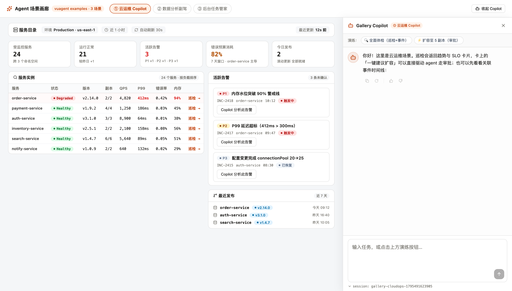
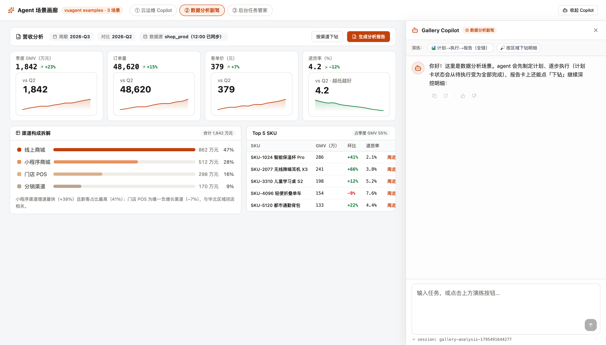
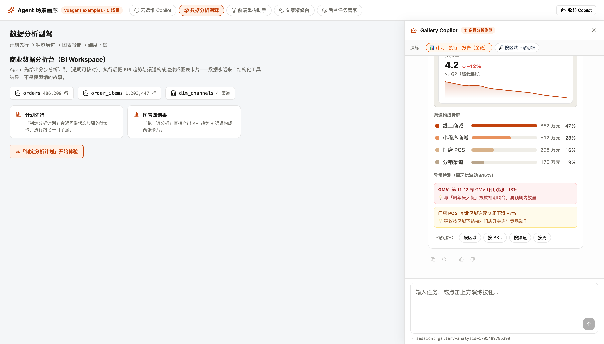
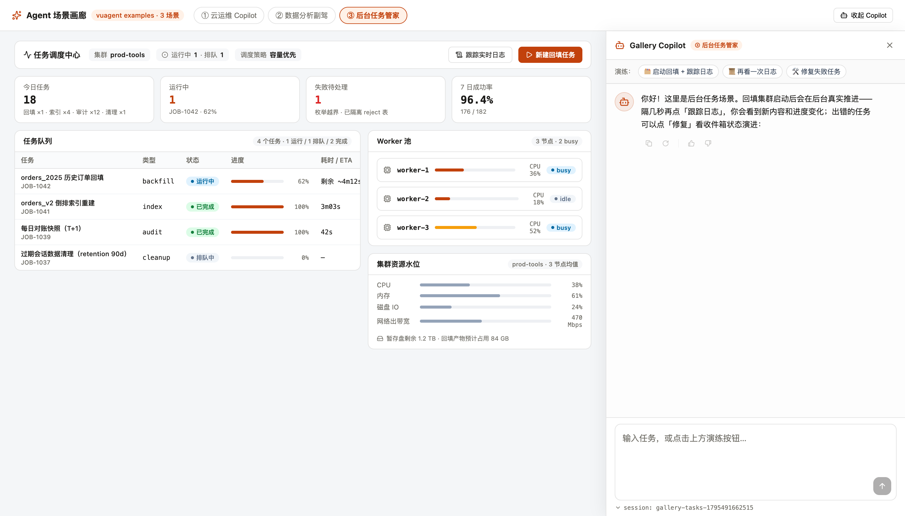

Agent 的能力，已经越来越强。
但用户看到的，还是一坨文本流。
执行计划 · 危险操作审批 · 工具调用链 · 上下文水位 —— 全部埋在字里行间
vuagent
.
Vue 生态第一个 Agent Ops 工具箱
执行计划 / 危险操作审批 / 工具调用 / 上下文 / 收件箱 —— 运行时操作层，一套组件讲完
@vuagent/protocol
契约层
TypeBox Schema 单一事实来源：18 事件流、工具契约、组件生命周期。
→
@vuagent/server
执行层
自研 Agent Harness：ReAct 循环、HITL 审批挂起、会话检查点、断线重连。
→
@vuagent/ui
界面层
79 个强类型组件 + 渲染分发器，SSE 事件流收敛为渐进式界面。
一份契约，三端永远对同一份 Schema 说话。
SCENE 01 · CLOUDOPS
云运维大盘：巡检、审批、扩容，一气呵成
高危写操作自动挂起 → 人工批准 → 执行链唤醒

HIGH RISK
生产变更安全审批：ops_scale_replicas 申请执行
service:
"order-service"
targetReplicas:
5
// 2 → 5
reason:
"营销大促洪峰流量横向扩容"
驳回
批准执行
✓
已批准 · 服务端执行链唤醒 · 变更落地
SCENE 02 · BI COPILOT
数据分析台：计划先行，图表即结果
KPI 趋势 · 渠道构成 · 异常检测 · 维度下钻


SCENE 03 · OPS CONSOLE
后台任务管家：任务在跑，日志在滚
收件箱状态演进 · ANSI 实时日志 · 失败可修复

backfill bf-1 — tail -f
+004s
✓
shard-1 写入 12,804 行（1.8s）
+008s
⚠
shard-3 脏数据 3 行 → reject 表
+012s
[进度]
128/1024 批 · 4,210 行/s
+015s
worker-2 心跳正常（内存 412MB）
+040s
✔ 回填完成
· 校验任务自动触发
vuagent
.
$
npm install
@vuagent/ui @vuagent/server
hellotombruce.github.io/vuagent
3 组件包
79 个强类型组件
MIT License
v0.3.0 已发布 npm